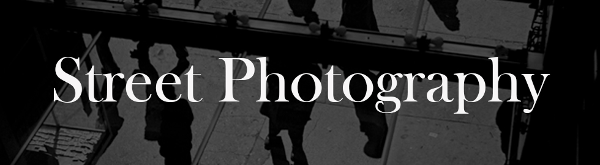

I would argue that when many people think of the genre, what first pops into their heads is the style of Garry Winogrand, and he would probably be turning in his grave right now given that he famously hated the term.
The energetic and restless
Winogrand incessantly captured
daily life in New York City and
America from the ’50s to the
early ‘80s, and his body of work
defined the post-World War II era
America, filled with opulence and
power, but mixed with a deep
underlying anxiety.
Born in 1928 as a Bronx native,
Winogrand studied photography
at the New School under Alexey
Brodovitch in 1949, who taught
him to rely on his instinct rather
than classical techniques, and it is
clear that this advice stuck and
helped him define his style. His
work was documentary but
spontaneous in nature, and
focused on the human condition.
His work was documentary but spontaneous in nature, and focused on the human condition.
Winogrand often employed tilted horizons and angles to fit more into the scene, while removing a sense of perfection and overt design. This helped his work feel more real, dynamic, anxiety ridden, and in the moment. It seems as if he purposely sought to distance himself from a more classical and orderly style and this helped mimic the spontaneous and chaotic nature of the moments and subjects that he was attracted to.
While he photographed in a quick and spontaneous way, when evaluating his work, it is clear that he had a sharp focus with clear narratives. He published four books in his lifetime, Women are Beautiful, The Animals, Public Relations, and Stock Photographs: The Fort Worth Fat Stock Show and Rodeo. However, these four bodies of work do not do justice to the full scope of his life’s work and vision, and it was actually the posthumous publications of his work that address this.
Jeff Rosenheim, curator in charge of the Metropolitan Museum of Art’s department of photographs, stated that, “He was a collector, like Whitman, of experiences,” and “I think there is this anxiety in the pictures that suggests something else is going on, which was pervasive in the culture at the time… It’s self-evident in the out-of-control-ness that he allows into his pictures and how they don’t seem to have a center.” The content, the form, the design, and the focus mixed with ambiguity of the images all came together to portray the underlying feelings of the culture at the time.
“He was a collector of experiences...”
Winogrand paved a new way for photography to be considered as an art, but he did this with snapshots and without the delicate and formal nature that many photographers have used to compose their works. Winogrand went by his gut and his art revealed itself over time through the body of work, a formal build up of a narrative between hundreds of thousands of snapshots. Real life was his clay and he was constantly refining, moulding, and building on it each day.
“Winogrand went by his gut and his art revealed itself over time through the body of work...”
Even with this overarching narrative, Winogrand understood that photographs could be ambiguous and open to many interpretations. It is fascinating how you could take any image away from the group and have it interpreted in completely different ways. You could organize sets of the works into many different ideas and themes, opening the images to even further interpretation. But the entire body itself has a sharp-minded and obsessive focus on American life and culture.
Winogrand’s images were less perfect and the picturesque scene became less important to him over time. Winogrand seemed to grasp at imperfect moments in time. After all, perfection was rarely a part of real life. Elegant people were a major part of his focus, but he had a way of photographing them that seemed to strip the elegance away, to reveal the fears and troubles that lurked beneath the surface.
“Winogrand seemed to grasp at imperfect moments in time.”
Winogrand understood that he could tell a complex story through his work, and part of the story was about him. Through showing other people’s stories, he revealed his own internal struggles, fears, and his pondering of life’s questions.
